First deliverable: shoreline elevation-versus-distance profiles
The lane's brief names this as the first deliverable: "shoreline elevation-versus-distance profiles with the flagged steps. If only a handful are convincing, emit only those."
Transects run perpendicular to the local isobase strike, because a shoreline step is only visible in cross-section. Each profile plots detrended elevation against distance along the transect, with the fitted isobase overlaid and every flagged step (▼) and lateral deflection (▲) marked.
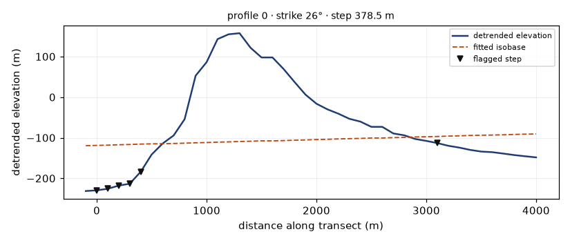
profile_0000.png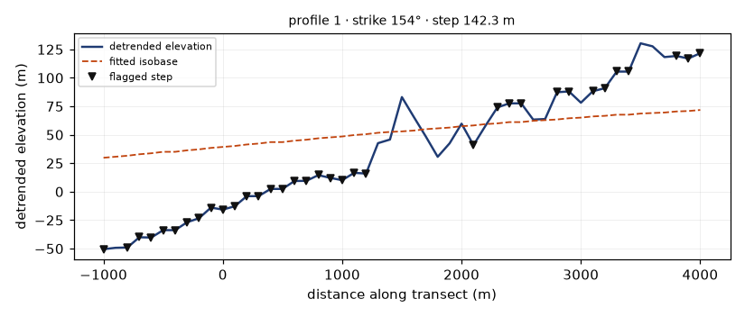
profile_0001.png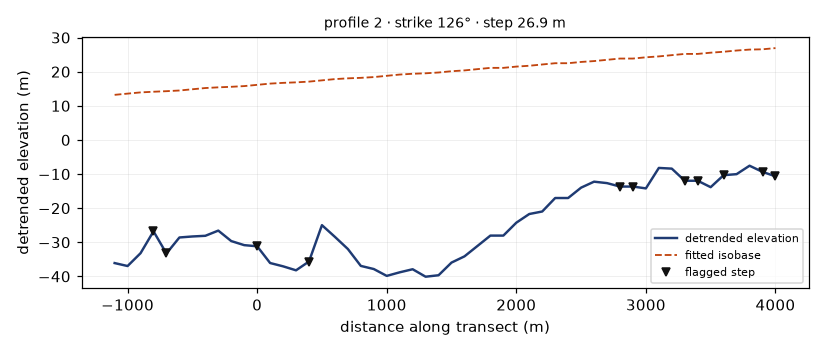
profile_0002.png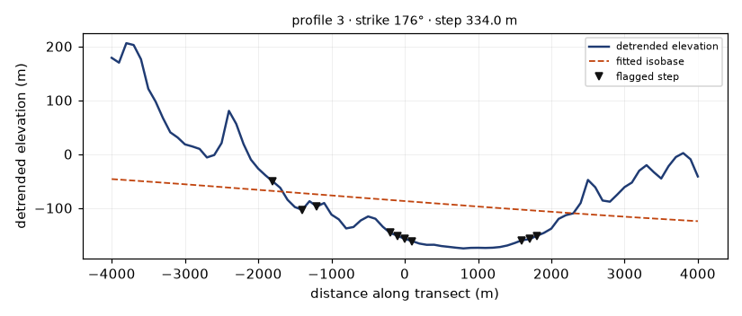
profile_0003.png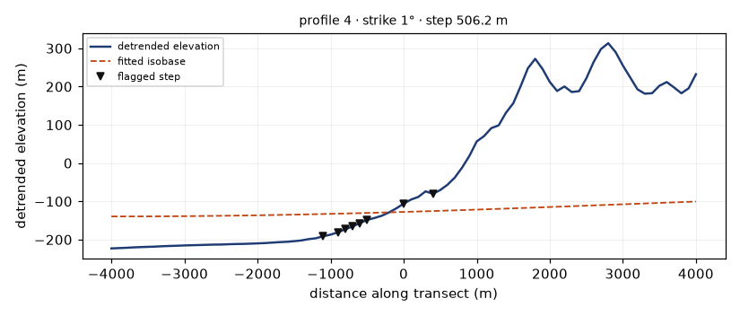
profile_0004.png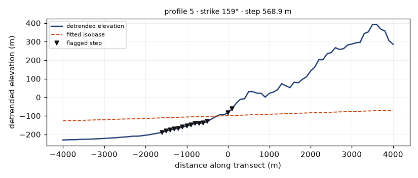
profile_0005.png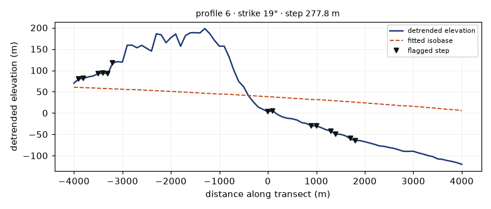
profile_0006.png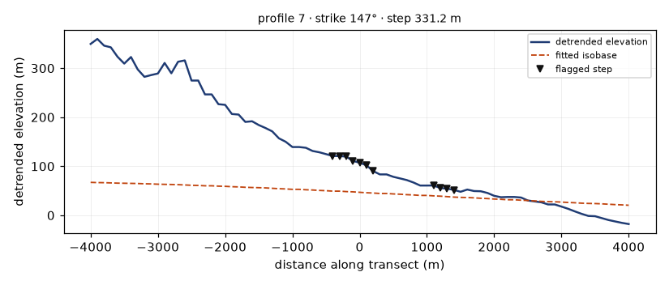
profile_0007.png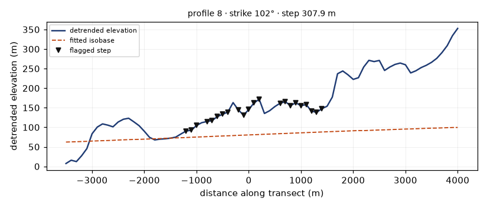
profile_0008.png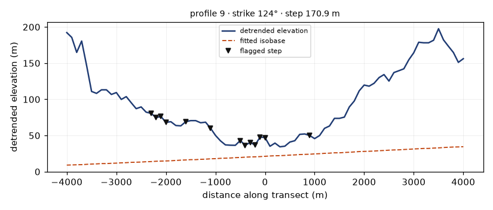
profile_0009.png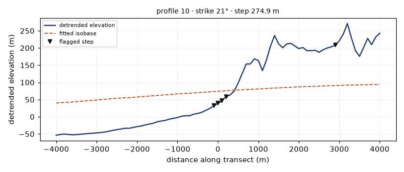
profile_0010.png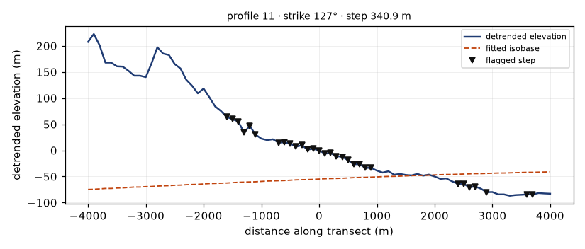
profile_0011.png24 of 400 profiles rendered. Full set: shoreline_profiles.csv (long format, every sample point) · shoreline_profiles.json (per-profile summary).
How many are convincing?
271,102 pixels carry a bounded throw-window step and 1,173 carry an azimuth kink. After trace extension along strike that becomes 200,181 traces covering 595,434 px. The emission then spends a budget of 38000 dots on the top of that ranking, so the "emit only those" instruction is implemented as a budget cap rather than as a hand-picked list — and the cap is set at the organiser-confirmed optimum, not at a guess.